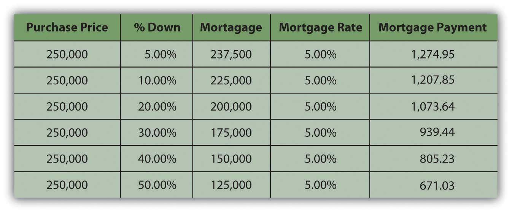
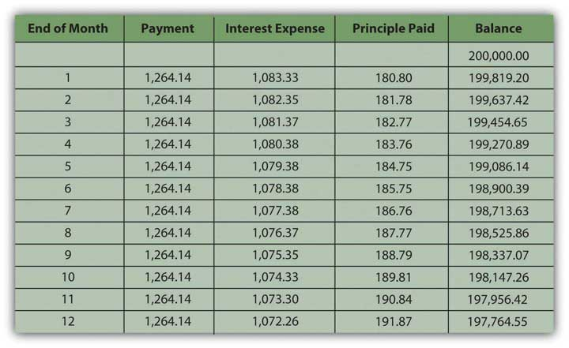
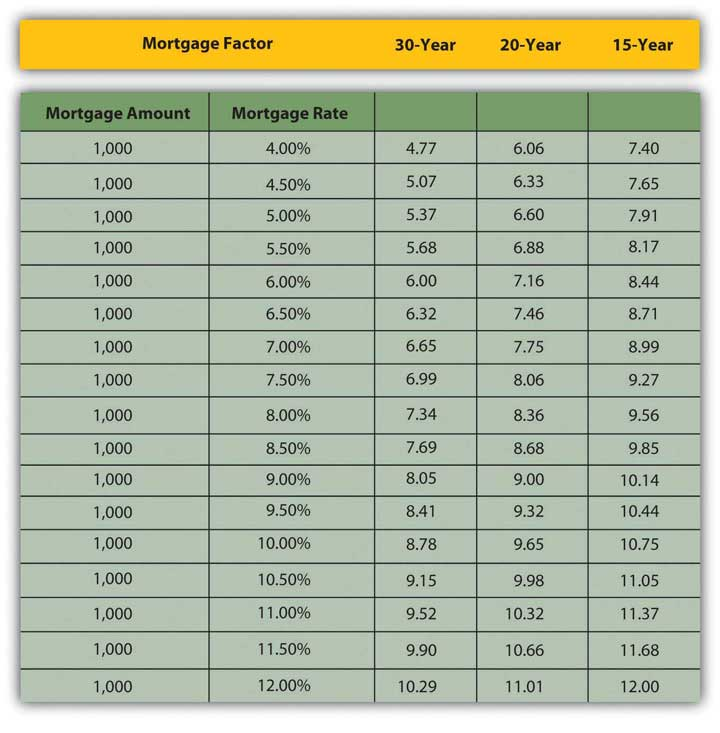

Just as your house may be your most significant purchase, your mortgage may be your most significant debt. The principal may be many times one year’s disposable income and may need to be paid over fifteen or thirty years. The house secures the loan, so if you default or miss payments, the lender may forecloseThe repossession of real property by a lender after a default on the mortgage by the borrower, assuming the real property has acted as collateral for the financing. on your house or claim ownership of the property, evict you, and resell the house to recover what you owed. You may lose not only your house but also your home.
Banks, credit unions, finance companies, and mortgage finance companies sell mortgages. They profit by lending and competing for borrowers. It makes sense to shop around for a mortgage, as rates and terms (i.e., the borrowers’ costs and conditions) may vary widely. The Internet has made it easy to compare; a quick search for “mortgage rates” yields many Web sites that provide national and state averages, lenders in your area, comparable rates and terms, and free mortgage calculators.
You may feel more comfortable getting your mortgage through your local bank, which may process the loan and then sell the mortgage to a larger financial institution. The local bank usually continues to service the loan, to collect the payments, but those cash flows are passed through to the financial institution (usually a much larger bank) that has bought the mortgage. This secondary mortgage market allows your local bank to have more liquidity and less risk, as it gets repaid right away, allowing it to make more loans. As long as you continue to make your payments, your only interaction is with the bank that is servicing the loan. Alternatively, local banks may earmark a percentage of mortgages to keep “in house” rather than sell.
The U.S. government assists some groups to obtain home loans, such as Native Americans, Americans with disabilities, and veterans. See, for example, http://www.homeloans.va.gov/ondemand_ vets_stream_video.htm.
Keep in mind that the costs discussed in this chapter, associated with various kinds of mortgages, may change. The real estate market, government housing policies, and government regulation of the mortgage financing market may change at any time. When it is time for you to shop for a mortgage, therefore, be sure you are informed of current developments.
Mortgages require a down paymentThe share of the purchase price paid in cash at the time of purchase; also called earnest money., or a percentage of the purchase price paid in cash upon purchase. Most buyers use cash from savings, the proceeds of a house they are selling, or a family gift.
The size of the down payment does not affect the price of the house, but it can affect the cost of the financing. For a certain house price, the larger the down payment, the smaller the mortgage and, all things being equal, the lower the monthly payments. An example of a thirty-year mortgage is shown in Figure 9.9 "Down Payment and Monthly Payment".
Figure 9.9 Down Payment and Monthly Payment
Usually, if the down payment is less than 20 percent of the property’s sale price, the borrower has to pay for private mortgage insuranceInsurance that insures the lender against any losses incurred by the costs of a loan default., which insures the lender against the costs of default. A larger down payment eliminates this expense for the borrower.
The down payment can offset the annual cost of the financing, but it creates opportunity cost and decreases your liquidity as you take money out of savings. Cash will also be needed for the closing costsTransaction costs of the home purchase, including appraisal fees, title, fee, and title insurance; closing costs are paid at the closing or purchase of the home. or transaction costs of this purchase or for any immediate renovations or repairs. Those needs will have to be weighed against your available cash to determine the amount of your down payment.
The monthly payment is the ongoing cash flow obligation of the loan. If you don’t pay this payment, you are in default on the loan and may eventually lose the house with no compensation for the money you have already put into it. Your ability to make the monthly payment determines your ability to keep the house.
The interest rate and the maturity (lifetime of the mortgage) determine the monthly payment amount. With a fixed-rate mortgageA mortgage loan with a fixed interest rate over the life of the loan., the interest rate remains the same over the entire maturity of the mortgage, and so does the monthly payment. Conventional mortgages are fixed-rate mortgages for thirty, twenty, or fifteen years.
The longer the maturity, the greater the interest rate, because the lender faces more risk the longer it takes for the loan to be repaid.
A fixed-rate mortgage is structured as an annuity: regular periodic payments of equal amounts. Some of the payment is repayment of the principal and some is for the interest expense. As you make a payment, your balance gets smaller, and so the interest portion of your next payment is smaller, and the principal payment is larger. In other words, as you continue making payments, you are paying off the balance of the loan faster and faster and paying less and less interest.
An example of a mortgage amortizationA schedule of mortgage payments showing the amounts of each payment that pay interest and that pay principal., or a schedule of interest and principal payments over the life of the loan, is shown in Figure 9.10 "A Mortgage Amortization: Year One of a Thirty-Year, Fixed-Rate 6.5 Percent Mortgage". The mortgage is a thirty-year, fixed-rate mortgage. Only year one is shown, but the spreadsheet extends to show the amortization over the term of the mortgage.
Figure 9.10 A Mortgage Amortization: Year One of a Thirty-Year, Fixed-Rate 6.5 Percent Mortgage
In the early years of the mortgage, your payments are mostly interest, while in the last years they are mostly principal. It is important to distinguish between them because the mortgage interest is tax deductible. That tax benefit is greater in the earlier years of the mortgage, when the interest expense is larger.
Monthly mortgage payments can be estimated using the mortgage factorThe mortgage payment per $1,000 of principal.. The mortgage factor is a calculation of the payment per $1,000 of the mortgage loan, given the interest rate and the maturity of the mortgage. Mortgage factors for thirty-, twenty-, and fifteen-year mortgages are shown in Figure 9.11 "Mortgage Factors for Various Mortgage Rates".
Figure 9.11 Mortgage Factors for Various Mortgage Rates
The monthly payment can be calculated as
mortgage factor × principal ÷ 1,000.So, if you were considering purchasing a house for $250,000 with a $50,000 down payment and financing the remaining $200,000 with a thirty-year, 6.5 percent mortgage, then your monthly mortgage payment would be 6.32 × $200,000 ÷ 1,000 = $1,264. If you used a fifteen-year mortgage, your monthly payment would be 8.71 × $200,000 ÷ 1,000 = $1,742. If you got the thirty-year mortgage but at a rate of 6 percent, your monthly payment would be $1,200.
Potential lenders and many Web sites provide mortgage calculators to do these calculations, so you can estimate your monthly payments for a fixed-rate mortgage if you know the mortgage rate, the term to maturity, and the principal borrowed.
So far, the discussion has focused on fixed-rate mortgages, that is, mortgages with fixed or constant interest rates, and therefore payments, until maturity. With an adjustable-rate mortgage (ARM)A mortgage loan with a floating or adjustable rate of interest., the interest rate—and the monthly payment—can change. If interest rates rise, the monthly payment will increase, and if they fall, it will decrease. By federal law, increases in ARM interest rates cannot rise more than 2 percent at a time, but even with this rate capA limit on the potential adjustment to the mortgage interest rate., homeowners with ARMs are at risk of seeing their monthly payment increase. Borrowers can limit this interest rate risk with a payment cap, which, however, introduces another risk.
A payment capA limit to the potential adjustment to the mortgage payment. limits the amount by which the payment can increase or decrease. That sounds like it would protect the borrower, but if the payment is capped and the interest rate rises, more of the payment pays for the interest expense and less for the principal payment, so the balance is paid down more slowly. If interest rates are high enough, the payment may be too small to pay all the interest expense, and any interest not paid will add to the principal balance of the mortgage.
In other words, instead of paying off the mortgage, your payments may actually increase your debt, and you could end up owing more money than you borrowed, even though you make all your required payments on time. This is called negative amortization. You should make sure you know if your ARM mortgage is this type of loan. You can voluntarily increase your monthly payment amount to avoid the negative effects of a payment cap.
Adjustable-rate mortgages are risky for borrowers. ARMs are usually offered at lower rates than fixed-rate mortgages, however, and may be more affordable. Borrowers who expect an increase in their disposable incomes, which would offset the risk of a higher payment, or who expect a decrease in interest rates, may prefer an adjustable-rate mortgage, which can have a maturity of up to forty years. Otherwise, a fixed-rate mortgage is better.
There are mortgages that combine fixed and variable rates—for example, offering a fixed rate for a specified period of time, and then an adjustable rate. Another type of mortgage is a balloon mortgageA mortgage that offers a shorter maturity but with lower payments and a large principal balance due at maturity. that offers fixed monthly payments for a specified period, usually three, five, or seven years, and then a final, large repayment of the principal. There are option ARMs, where you pay either interest only or principal only for the first few years of the loan, which makes it more affordable. While you are paying interest only, however, you are not accumulating equity in your investment.
As an asset, a house may be used to secure other types of loans. A home equity loanA loan secured by home equity value. or a second mortgage allows a homeowner to borrow against any equity in the home. A home improvement loan is a type of home equity loan. A home equity line of credit (HELOC)A loan secured by home equity value, structured such that principal may be borrowed only as needed, and interest paid only on the balance outstanding. allows the homeowner to secure a line of credit, or a loan that is borrowed and paid down as needed, with interest paid only on the outstanding balance. A reverse mortgageA loan secured by equity value, most often used for elderly homeowners to extract equity value while retaining home ownership. Typically, the loan balance is payable at the home owner’s death. is designed to provide homeowners with high equity a monthly income in the form of a loan. A reverse mortgage essentially is a loan against your home that you do not have to pay back for as long as you live there. To be eligible for most reverse mortgages, you must own your home and be sixty-two years of age or older. You or your estate repays the loan when you sell the house or die.
PointsOne percent of the mortgage value, used as prepaid interest paid at time of purchase. are another kind of financing cost. One point is one percent of the mortgage. Points are paid to the lender as a form of prepaid interest when the mortgage originates and are used to decrease the mortgage rate. In other words, paying points is a way of buying a lower mortgage rate.
In deciding whether or not it is worth it to pay points, you need to think about the difference that the lower mortgage rate will make to your monthly payment and how long you will be paying this mortgage. How long will it take for the points to pay for themselves in reduced monthly payments? For example, suppose you have the following choices for a thirty-year, fixed rate, $200,000 mortgage: a mortgage rate of 6.5 percent with no points or a rate of 6 percent with 2 points.
First, you can calculate the difference in your monthly payments for the two different situations. Using the mortgage factor for a thirty-year mortgage, the monthly payments in each case would be the mortgage factor × $200,000 ÷ 1,000 or
| Points | Mortgage rate | Mortgage factor | Monthly payment |
|---|---|---|---|
| 0 | 6.50% | 6.32 | 1,264 |
| 2 | 6.00% | 6.00 | 1,200 |
Paying the two points buys you a lower monthly payment and saves you $64 dollars per month. The two points cost $4,000 (2 percent of $200,000). At the rate of $64 per month, it will take 62.5 months ($4,000 ÷ 64) or a little over five years for those points to pay for themselves. If you do not plan on having this mortgage for that long, then paying the points is not worth it. Paying points has liquidity and opportunity costs up front that must be weighed against its benefit. Points are part of the closing costs, but borrowers do not have to pay them if they are willing to pay a higher interest rate instead.
Other costs of a house purchase are transaction costs, that is, costs of making the transaction happen that are not direct costs of either the home or the financing. These are referred to as closing costs, as they are paid at the closing, the meeting between buyer and seller where the ownership and loan documents are signed and the property is actually transferred. The buyer pays these closing costs, including the appraisal fee, title insurance, and filing fee for the deed.
The lender will have required an independent appraisalAn opinion of the market value of a property done by a professional appraiser who is familiar with the real estate market and with housing, and who has been certified to do appraisals. of the home’s value to make sure that the amount of the mortgage is reasonable given the value of the house that secures it. The lender will also require a title searchA search of public records to determine if there are any restrictions or allowances on the property to be purchase, or any liens, or debts such as a mortgage balance, overdue taxes, a mechanic’s lien, and so on, that must be paid if the property is sold. and contract for title insuranceInsurance purchased by the purchaser of the property that insures against any omission from the title search.. The title company will research any claims or liens on the deed; the purchase cannot go forward if the deed may not be freely transferred. Over the term of the mortgage, the title insurance protects against flaws not found in the title and any claims that may result. The buyer also pays a fee to file the property deed with the township, municipality, or county. Some states may also have a property transfer taxA tax on the transfer of title to property; a transaction cost of purchasing property. that is the responsibility of the buyer.
Closings may take place in the office of the title company handling the transaction or at the registry of deeds. Closings also may take place in the lender’s offices, such as a bank, or an attorney’s office and usually are mediated between the buyer and the seller through their attorneys. Lawyers who specialize in real estate ensure that all legal requirements are met and all filings of legal documents are completed. For example, before signing, home buyers have a right to review a U.S. Housing and Urban Development (HUD) Settlement Statement twenty-four hours prior to the closing. This document, along with a truth-in-lending disclosure statement, sets out and explains all the terms of the transaction, all the costs of buying the house, and all closing costs. Both the buyer and the seller must sign the HUD document and are legally bound by it.
You are considering purchasing an existing single family house for $200,000 with a 20 percent down payment and a thirty-year fixed-rate mortgage at 5.5 percent.